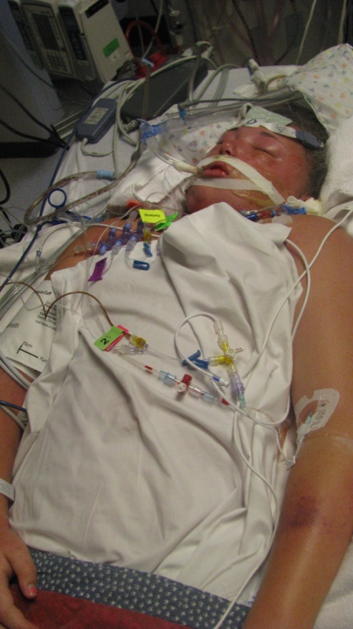

- DONATE
- News
- Events
- About Us

Playing volleyball with the girls, shooting hoops with the boys, hunting and fishing with her dad Marcus, hated shopping with her mom Amy and big sister Katelyn, riding 4-wheelers and jet skis, watching sports, taking care of her 4-H animals for the Leavenworth County fair, going on family vacations especially cruises, and spending time with her friends….for Alyssa, that is what life was all about.
Alyssa was most comfortable in t-shirts, basketball shorts and tennis shoes (of course it all had to be Under Armour or Nike—in every color). No fancy hair-do (always in a ponytail), no polish on her nails, no make-up, just a simple, beautiful girl who lived her life with a big heart and contagious smile.
Alyssa was an avid athlete and loved sports. She played competitive volleyball, basketball and softball. Her childhood dream was to go to college to play basketball and then become a Nurse. But that all came to a halt on the morning of February 17, 2011, when Alyssa, just 13 years old, collapsed at home and was rushed to her local doctor. She was then transported to the local hospital by ambulance and then life-flighted to Children’s Mercy by the Critical Care Transport Team, where she lost consciousness en route. Alyssa had contracted H1N1 Influenza, accompanied by strep and pneumonia. She also developed sepsis and suffered organ failure. She was only given a 20% chance to survive. She remained in the hospital for 43 days.
After recovering from her original illness in 2011, she decided she wanted to become a Transport Nurse and the planning began. Over the next few years, she had it all figured out. She became a volunteer at Children’s Mercy in Physical Therapy, as well as a committed volunteer with Ronald McDonald House Charities in Kansas City, often fundraising to help children and families battling illnesses. She was also an active member of the Army of Christ Youth Group where she impacted many people in the community. Alyssa was a very smart girl as well as an honor roll student. Her last report card indicated her gpa was 3.9 and she was ranked 7 out of 56 students. She began taking college courses at Kansas City Kansas Community College. She started going on college visits and made the decision to attend Missouri Western State University. She received her CNA license and began working at a Senior Living Center. In the summer of 2014, Alyssa became a committed Critical Care Transport Volunteer at Childerens's Mercy with the dream of becoming a Critical Care Transport Nurse. Alyssa was readmitted to Children’s Mercy in August 2014, shortly after completing her summer volunteer program. She spent three weeks in the hospital and was then referred to Nationwide Children’s Hospital in Ohio but not until November 19. Alyssa returned to high school for three months as she walked the halls of her high school with her formula filled backpack and feeding tube from her nose 24 hours a day unable to eat or drink.
Alyssa Lane Hutchens was lifted to heaven by her angels after sadly ending her life on November 10, 2014, at the short age of 16, after battling chronic medical issues. She never got the chance to attend her high school prom, a spring break school trip to Italy, high school graduation, college, or to pursue that dream she worked so hard for of walking through the doors at Children’s Mercy as a Critical Care Transport Nurse.
Thank you to all those who remember Alyssa by changing the lives of others in her memory. She will always be our Super Hero!